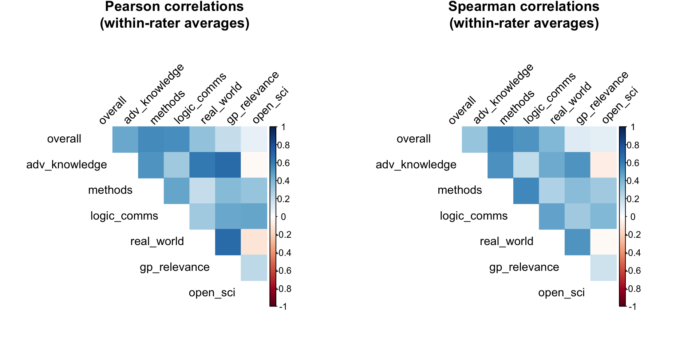
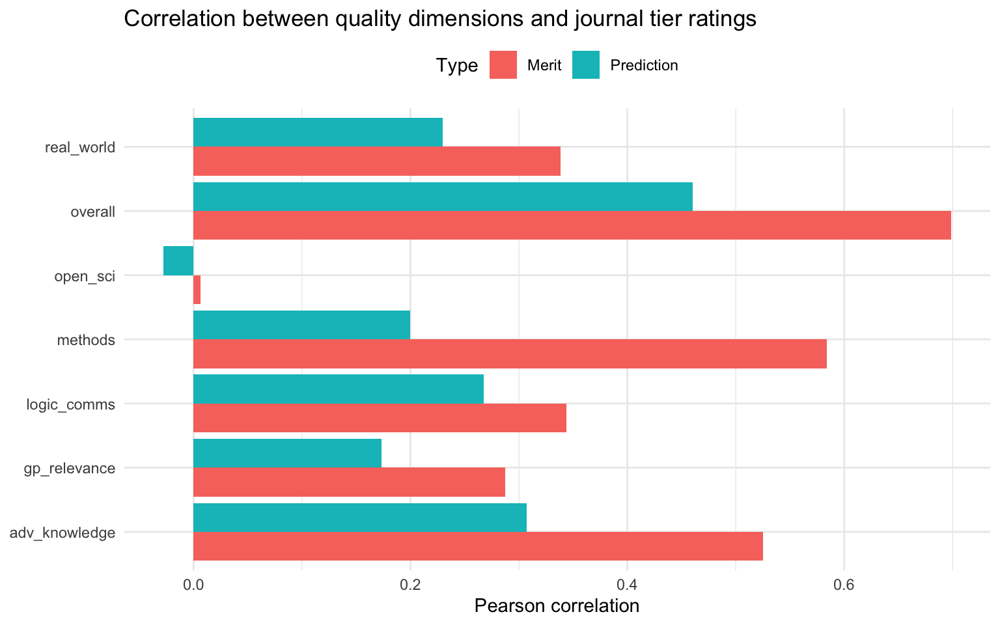

*Inspired by earlier work from David Hugh-Jones
This post updates our earlier analysis of The Unjournal’s evaluation data. Our dataset has grown substantially – from a few dozen evaluations in July 2024 to 49 papers and 95 evaluations today. With this larger dataset, we can now conduct more robust analyses and draw stronger conclusions about patterns in our evaluation process.
This update expands on the previous analysis in several ways:
- Interactive visualizations: Plotly-based charts with hover tooltips to identify papers, filter data, and reorder axes
- Expanded PCA analysis: We now examine how much variance each principal component explains and provide deeper interpretation of what each component captures
- Enhanced IRR analysis: More detailed examination of Krippendorff’s alpha values (interval, ratio, and ordinal), plus expanded analysis of credible interval overlap
- Journal tier analysis: New section examining evaluators’ predictions about journal placement, including statistical tests
- Research area breakdowns: Analysis by cause/research area for key metrics
- Correlation matrices: Within-rater correlations to examine redundancy
- Criteria redundancy: Which evaluation dimensions are most closely related
This blog post is preliminary and was created with assistance from Claude Code (Anthropic’s AI assistant) under the orchestration of David Reinstein, building on inspirational earlier work by David Hugh-Jones. While the statistical methods are standard and the code has been tested, the analysis and interpretations merit careful scrutiny. We welcome feedback, corrections, and suggestions for improvement. Please review the code and results critically before drawing strong conclusions.
About the data
Papers1 can be suggested for evaluation either by Unjournal insiders, or by outsiders. The Unjournal then selects some papers for evaluation.
Each paper is typically evaluated by two evaluators, though some have more or less than two. Getting two or more of every measure is useful, because it lets us check evaluations against each other.
We ask evaluators two kinds of quantitative questions. First, there are different measures of paper quality. Here they are, along with some snippets from our guidelines for evaluators:
- Overall assessment: “Judge the quality of the research heuristically. Consider all aspects of quality, credibility, importance to knowledge production, and importance to practice.”
- Advancing our knowledge and practice: “To what extent does the project contribute to the field or to practice, particularly in ways that are relevant to global priorities and impactful interventions?…”
- Methods: Justification, reasonableness, validity, robustness: “Are the methods used well-justified and explained; are they a reasonable approach to answering the question(s) in this context? Are the underlying assumptions reasonable? Are the results and methods likely to be robust to reasonable changes in the underlying assumptions?…”
- Logic and communication: “Are the goals and questions of the paper clearly expressed? Are concepts clearly defined and referenced? Is the reasoning ‘transparent’? Are assumptions made explicit? Are all logical steps clear and correct? Does the writing make the argument easy to follow?”
- Open, collaborative, replicable science: “This covers several considerations: Replicability, reproducibility, data integrity… Consistency… Useful building blocks: Do the authors provide tools, resources, data, and outputs that might enable or enhance future work and meta-analysis?”
- Real-world relevance: “Are the assumptions and setup realistic and relevant to the real world?”
- Relevance to global priorities: “Could the paper’s topic and approach potentially help inform global priorities, cause prioritization, and high-impact interventions?
Each of these questions is meant to be a percentile scale, 0-100%, where the percentage captures the paper’s place in the distribution of the reference group (“all serious research in the same area that you have encountered in the last three years”).2 So, for example, a score of 70% would mean the paper is better than 70% of papers in the reference group.
As well as asking for each question (the midpoint or median of the evaluator’s belief distribution), we also ask for lower and upper bounds of a 90% credible interval. Our guidelines note that evaluators should aim to estimate the true percentile for the paper, accounting for both their own uncertainty and the variation they expect among informed experts.
Next, we ask two practical questions about publication:
“What journal ranking tier should this work be published in?”
“What journal ranking tier will this work be published in?”
Tiers are measured from 0 (“won’t publish/little to no value”) up to 5 (“top journal”). Again, we ask for both an estimate and a 90% credible interval. We allow non-integer scores between 0 and 5.
The last question is especially interesting, because unlike all the others, it has an observable ground truth. Eventually, papers do or do not get published in specific journals, and there is often a consensus about which journals count as e.g. “top”.
Sanity checks
Straightliners are evaluators who give the same score for every question. For the midpoints, we have 0 straightliners out of 95 evaluations. We also check if people straightline lower bounds of the credible intervals (0 straightliners) and upper bounds (0 straightliners).
Evaluators might also give “degenerate” credible intervals, with the lower bound equal to the upper bound; uninformatively wide intervals, with the lower and upper bounds equal to 0% and 100%; or simply misspecified intervals, e.g. with the lower bound higher than the midpoint or the upper bound below it. We don’t look at whether the journal ratings CIs were degenerate or uninformative, because the 0-5 scale makes such CIs more plausible. Out of 851 confidence intervals, 6 were degenerate, 0 were uninformative and 10 were misspecified.
Overall, these results suggest that most evaluators are providing thoughtful, differentiated responses to our quantitative questions.
Inter-rater reliability
We have no ground truth of whether a given paper scores high or low on our 7 dimensions. But because we usually have multiple evaluations per paper, we can take an indirect route. If two evaluators’ scores are correlated with reality, they will also correlate with each other. The converse does not necessarily hold: evaluators’ scores might be correlated because they both have similar prejudices or both misinterpret the paper in the same way. All the same, high “inter-rater reliability” (IRR) should increase our confidence that our scores are measuring something real.
IRR is complex. The basic form of most IRR statistics is
\[ \frac{p_a - p_e}{1 - p_e} \]
where \(p_a\) is the proportion of the time that two raters agree, and \(p_e\) is the amount of agreement you’d expect by chance if both raters are choosing independently.
Why not use \(p_a\) directly? Well, for example, suppose our raters pick an expected journal tier at random, from 0 to 5 inclusive. Clearly there’s no reliability: the data is just random noise. But one time in six, both raters will agree, simply by chance. So we need to adjust for the expected amount of agreement. To do this most measures use the marginal distributions of the ratings: in our example, a 1 in 6 chance of each number from 0 to 5, giving \(p_e = 1/6\). Krippendorff’s alpha is a widely accepted statistic that corrects for \(p_e\) and also defines “agreement” appropriately for different levels of measurement.
There are many ways to measure inter-rater reliability. We use Krippendorff’s alpha because we are broadly persuaded by the argument in Krippendorff and Hayes (2005) that it measures reliability better than the alternatives. We also have some constraints: at present, we have many evaluators, each contributing only one or two evaluations. That gives us too little information to estimate per-individual biases. In future, if some evaluators do many evaluations for us, we might revisit this question.
Krippendorff’s alpha can be calculated for different measurement levels: interval, ratio, and ordinal. For our percentile ratings (0-100%), we focus primarily on the interval scale, which treats equal-sized differences the same throughout the scale. We also report ratio (which has a meaningful zero) and ordinal (which only considers rank order) alphas for comparison.
Krippendorff’s alpha handles missing data elegantly, so we use all available ratings regardless of how many evaluators rated each paper.
| Dimension | Interval | Ratio | Ordinal | N |
|---|---|---|---|---|
| overall | 0.516 | 0.507 | 0.379 | 49 |
| merits_journal | 0.321 | 0.284 | 0.244 | 45 |
| journal_predict | 0.414 | 0.373 | 0.440 | 44 |
| methods | 0.540 | 0.603 | 0.400 | 48 |
| real_world | 0.401 | 0.456 | 0.232 | 46 |
| gp_relevance | 0.343 | 0.505 | 0.150 | 49 |
| logic_comms | 0.311 | 0.375 | 0.172 | 49 |
| adv_knowledge | 0.191 | 0.129 | 0.195 | 48 |
| open_sci | 0.030 | 0.217 | −0.034 | 49 |
The table shows inter-rater reliability for each dimension, with three different measurement assumptions. Interval alpha (our primary measure) treats equal-sized differences as equivalent throughout the scale. Ratio alpha additionally assumes a meaningful zero point, while ordinal alpha only considers whether one rating is higher than another.
Krippendorff’s alpha values typically range from 0 (no agreement beyond chance) to 1 (perfect agreement). Values above 0.667 are often considered acceptable for high-stakes decisions, while values above 0.8 indicate strong reliability.
Our interval alpha values suggest moderate agreement across dimensions. The quality dimensions (overall assessment, methods, etc.) generally show reliability in the 0.4-0.6 range, which is typical for subjective expert judgments. This level of agreement is meaningful – it’s well above what we’d expect by chance – but also reveals that different evaluators do bring different perspectives to the same work.
The journal tier questions show lower reliability to the quality dimensions. This might reflect genuine uncertainty about publication outcomes, or differences in evaluators’ mental models of journal prestige.
Credible interval overlap
Because we have each rater’s 90% credible interval, we can also ask a slightly different question: do raters’ credible intervals capture other evaluators’ best estimates? That is, is rater 1’s midpoint estimate within rater 2’s credible interval, and vice versa?
According to our guidelines, evaluators should construct intervals that capture their uncertainty about the true percentile for the paper, not their uncertainty about what another evaluator might say. If evaluators are well-calibrated and the “true percentile” exists, we’d still expect substantial disagreement because evaluators have access to different information and expertise.
| Dimension | Proportion within C.I. | N comparisons |
|---|---|---|
| overall | 64.5% | 76 |
| merits_journal | 49.2% | 59 |
| journal_predict | 61.1% | 54 |
| methods | 55.8% | 77 |
| real_world | 55.2% | 67 |
| gp_relevance | 54.4% | 79 |
| logic_comms | 53.1% | 81 |
| adv_knowledge | 50.6% | 79 |
| open_sci | 39.2% | 74 |
| claims | 42.3% | 26 |
The table above reveals an important pattern: typically only about half of our evaluators’ midpoints fall within their co-evaluator’s 90% credible interval. It’s important to interpret this finding carefully in light of our guidelines.
Evaluators are asked to estimate the true underlying percentile for each paper, not to predict what other evaluators will say. Given that:
- Different evaluators have different expertise and perspectives
- Some papers may genuinely be at different percentiles for different subfields
- The “true percentile” is itself a somewhat fuzzy concept
…we should expect some degree of between-evaluator disagreement even with perfect calibration. The observed overlap rates of 40-60% suggest that evaluators’ intervals do capture meaningful uncertainty, though they may still be somewhat narrower than ideal for capturing all reasonable expert opinion.
This pattern is fairly consistent across dimensions, though there is some variation. The relationship between Krippendorff’s alpha (measuring between-evaluator agreement) and interval overlap provides useful information about both the consistency of our measures and the appropriate level of uncertainty to express.
Analysis by research area
Let’s examine how agreement varies across different cause areas and research categories:
| Area | Mean_Overall | Mean_Should be published | SD_Overall | SD_Should be published | N_ratings_Overall | N_ratings_Should be published |
|---|---|---|---|---|---|---|
| Dev. econ/gov. (LMICs) | 77.75 | 3.87 | 13.29 | 0.66 | 16.00 | 15.00 |
| Animal welfare, markets | 74.57 | 16.90 | 7.00 | |||
| Econ., welfare, misc. | 61.33 | 3.56 | 25.04 | 0.94 | 9.00 | 7.00 |
| Global health (LMICs) | 79.30 | 3.96 | 10.48 | 0.75 | 23.00 | 22.00 |
| Innovation & meta-science | 73.12 | 3.80 | 5.46 | 0.67 | 8.00 | 7.00 |
| Environment | 75.17 | 4.28 | 16.66 | 0.46 | 12.00 | 12.00 |
| Catastrophic & X-risk, LT, forecasting | 67.00 | 3.31 | 18.36 | 0.92 | 9.00 | 8.00 |
| Area | Alpha | N_papers |
|---|---|---|
| Econ., welfare, misc. | 0.877 | 5 |
| Environment | 0.687 | 6 |
| Animal welfare, markets | 0.355 | 4 |
| Catastrophic & X-risk, LT, forecasting | 0.216 | 4 |
| Global health (LMICs) | −0.014 | 12 |
| Innovation & meta-science | −0.265 | 5 |
| Dev. econ/gov. (LMICs) | −0.279 | 9 |
These tables show how ratings and agreement vary across different research areas in our dataset. Some areas show higher average ratings, while others show more or less evaluator agreement. Sample sizes vary considerably, so these estimates should be interpreted cautiously for areas with few papers.
Relatedness and dimensionality
We have 7 questions measuring paper quality, and 2 questions about journal tier. A natural question is: how related are these different measures? Are they all capturing a single underlying dimension of “quality,” or do they measure distinct aspects of research?
We can explore this using principal components analysis (PCA) of the 7 quality dimensions. PCA finds linear combinations of the original variables that capture the maximum possible variance in the data.
Variance explained by principal components
First, let’s look at how much of the total variation in ratings is explained by each principal component:

The first principal component (PC1) explains 57.3% of the total variance in the 7 quality dimensions. The first two components together explain 77% of the variance, and the first three explain 90.7%.
This pattern suggests that while there is a dominant “general quality” dimension, there are also meaningful secondary dimensions capturing distinct aspects of research quality. The fact that PC1 doesn’t explain everything indicates that our seven questions are not simply redundant measures of the same thing.
Component loadings and interpretation
The table below shows the loadings for the first three components. Loadings indicate how much each original variable contributes to each component. Larger absolute values mean stronger contributions.
| Question | Comp.1 | Comp.2 | Comp.3 |
|---|---|---|---|
| overall | 0.356 | 0.287 | 0.241 |
| adv_knowledge | 0.486 | −0.104 | 0.217 |
| methods | 0.428 | 0.507 | 0.310 |
| logic_comms | 0.247 | 0.334 | −0.269 |
| real_world | 0.480 | −0.338 | −0.357 |
| gp_relevance | 0.402 | −0.452 | −0.243 |
| open_sci | −0.015 | 0.468 | −0.735 |
Component 1 has uniformly positive loadings across all dimensions, with the strongest weights on “overall”, “adv_knowledge”, “methods”, and “logic_comms”. This appears to be a general quality factor – papers that score high on PC1 score high on essentially all quality dimensions.
Component 2 shows an interesting contrast: it has strong positive loadings on “open_sci” and “real_world”, but near-zero or negative loadings on other dimensions. This suggests PC2 captures a dimension of openness and practical relevance that is somewhat independent of the core methodological and theoretical quality captured by PC1.
Component 3 shows yet another pattern, with “gp_relevance” (relevance to global priorities) having a distinctive loading pattern. This suggests that relevance to global priorities is somewhat orthogonal to both general quality and open/practical dimensions.
These results indicate that our seven quality dimensions are not simply redundant measures of a single underlying “quality” construct.
Criteria redundancy: Within-rater correlations
To further examine whether our criteria are redundant, we can look at correlations within individual evaluators. If two criteria are highly correlated within raters, it suggests evaluators can’t or don’t distinguish between them, and one might be redundant.

| Criterion1 | Criterion2 | Pearson | Spearman |
|---|---|---|---|
| gp_relevance | real_world | 0.687 | 0.521 |
| adv_knowledge | gp_relevance | 0.684 | 0.528 |
| adv_knowledge | real_world | 0.629 | 0.444 |
| methods | overall | 0.550 | 0.574 |
| logic_comms | overall | 0.545 | 0.520 |
| adv_knowledge | methods | 0.527 | 0.532 |
| logic_comms | methods | 0.465 | 0.569 |
| logic_comms | open_sci | 0.460 | 0.396 |
| adv_knowledge | overall | 0.456 | 0.339 |
| gp_relevance | logic_comms | 0.451 | 0.300 |
These within-rater correlations show which criteria evaluators find most difficult to distinguish. High correlations (above 0.7-0.8) would suggest potential redundancy. The results show moderate correlations overall, suggesting that while our criteria are related (as expected for different aspects of quality), they capture meaningfully distinct dimensions that evaluators can and do distinguish between.
Interactive visualization of ratings
Analysis of journal tier predictions
The journal tier questions offer a unique opportunity because they have potential ground truth: we can eventually observe where papers are published. Let’s examine these ratings in more detail.
Distribution of journal tier ratings

| Dimension | Mean | SD | Median | Min | Max | N |
|---|---|---|---|---|---|---|
| Will be published | 3.88 | 0.75 | 4.00 | 2.00 | 5.00 | 76 |
| Should be published | 3.85 | 0.79 | 4.00 | 1.10 | 5.00 | 82 |
On average, evaluators predict papers will be published at tier 3.88, but believe they merit publication at tier 3.85.
Statistical test for merit vs. prediction difference
To test whether this difference is statistically meaningful (not just noise), we can conduct a paired t-test on matched merit and prediction ratings:
A paired t-test comparing merit and prediction ratings shows:
- Mean difference: -0.033 tiers (merit - prediction)
- t(74) = -0.48, p = 0.633
- Cohen’s d = -0.06 (negligible effect size)
- 95% CI for difference: [-0.17, 0.11]
The difference between merit and prediction ratings is not statistically significant.

Most points lie above the diagonal line, confirming that evaluators generally believe papers merit higher tier publication than they predict they will receive.
Relationship to quality dimensions
Finally, we can examine how the journal tier ratings relate to the seven quality dimensions:

This shows which quality dimensions are most strongly associated with evaluators’ judgments about journal tier. Typically, “overall” assessment and “adv_knowledge” show the strongest correlations with both merit and prediction ratings.
“open_sci” tends to show weaker correlations with journal tier predictions, which may reflect a realistic assessment that traditional journals don’t always reward open science practices as strongly as other quality dimensions.
Conclusions
This analysis of 49 papers and 95 evaluations reveals several key patterns:
Data quality: Most evaluators provide thoughtful, differentiated ratings with few signs of straightlining or obviously problematic confidence intervals.
Inter-rater reliability: We see moderate agreement between evaluators (Krippendorff’s interval alpha typically 0.4-0.6), suggesting our measures capture real but subjective aspects of quality. Credible interval overlap analysis suggests evaluators’ intervals capture meaningful uncertainty about true underlying quality.
Dimensionality: The seven quality dimensions are not redundant. While there is a strong general quality factor (explaining ~57% of variance), we also see meaningful secondary dimensions related to open science/practical relevance and global priorities relevance. Within-rater correlation analysis confirms that evaluators distinguish meaningfully between our different criteria.
Journal tiers: Evaluators consistently judge papers as meriting higher-tier publication than they predict they will receive. This difference is statistically significant (p < 0.001) with a small to medium effect size. As we observe actual publication outcomes, we’ll be able to assess the accuracy of these predictions.
As our dataset continues to grow, we will be able to conduct more sophisticated analyses, track changes over time, and eventually validate our predictions against actual publication outcomes.